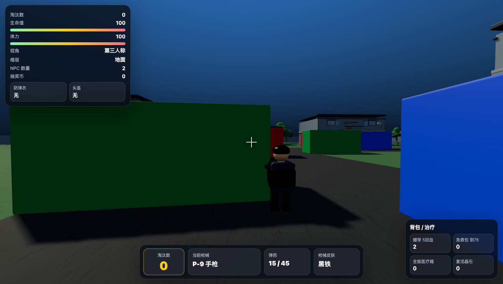
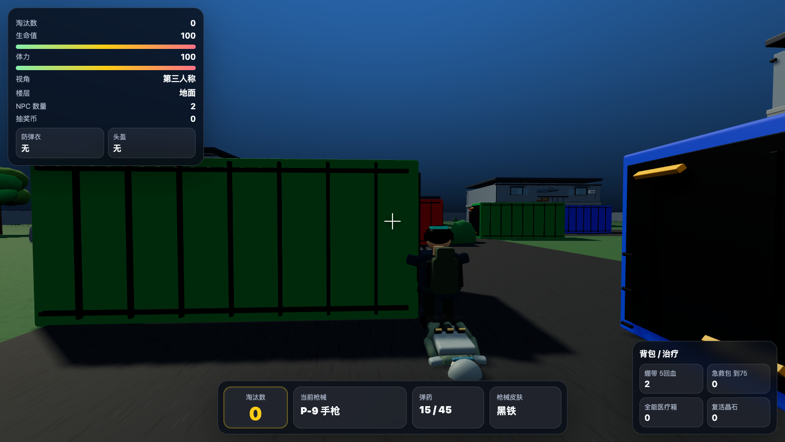
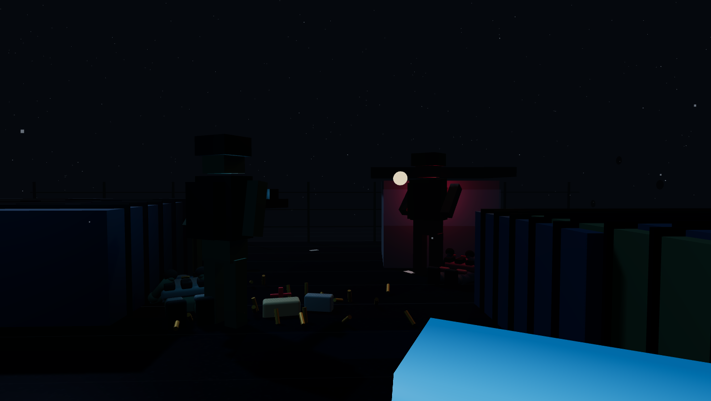
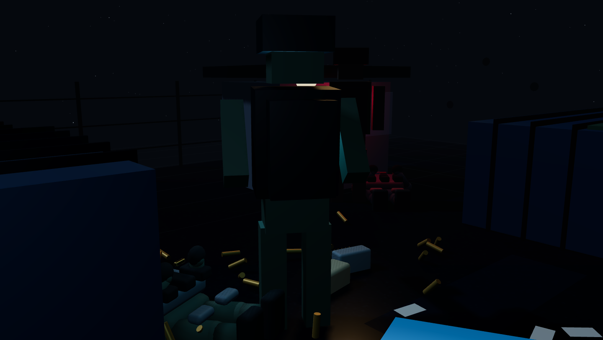
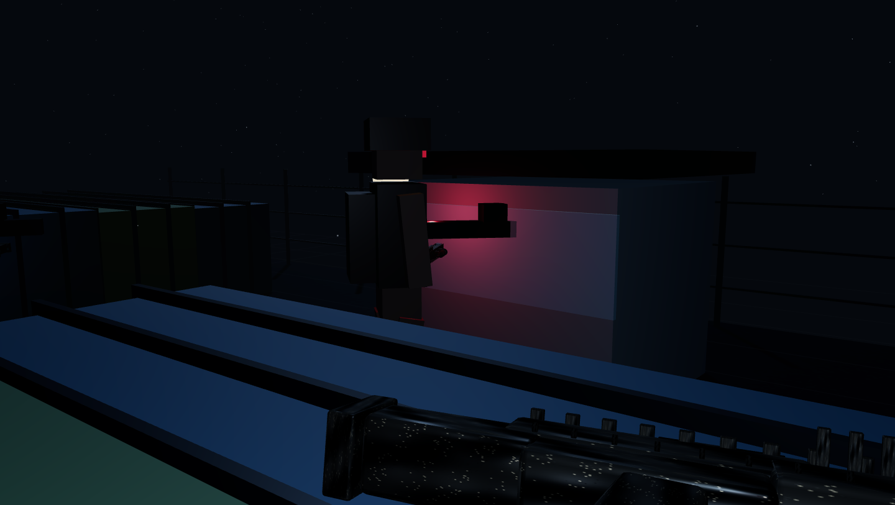
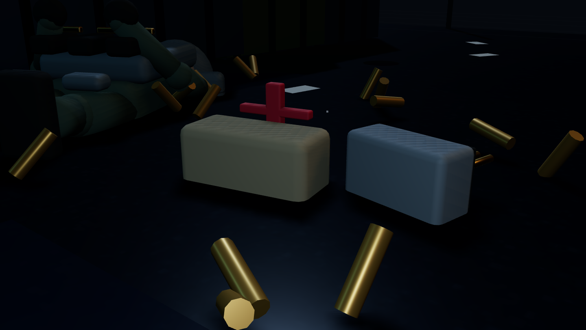
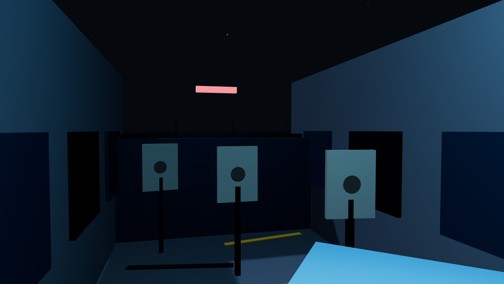
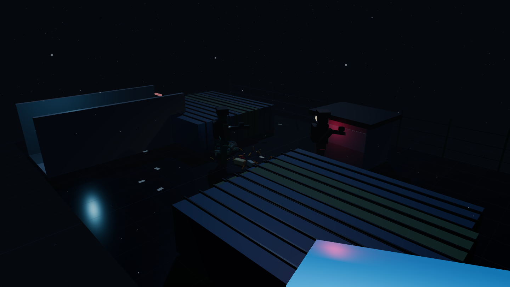

Tactical Game Visual Upgrade: Baseline vs Rainy Checkpoint Slice

Before: original source gameplay

Previous final packet: GLB integration proof

Now: first-person PBR hero rifle

Now: third-person player gear camera

Enemy under checkpoint light

Loot and rifle pickup on wet asphalt

Indoor killhouse corridor

Final wide rainy checkpoint slice